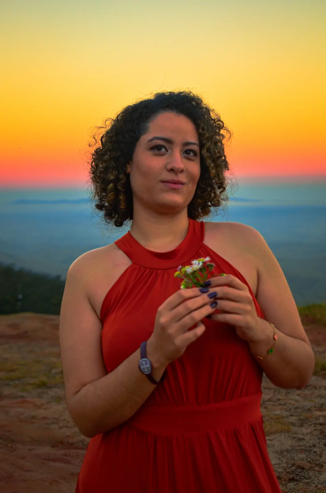
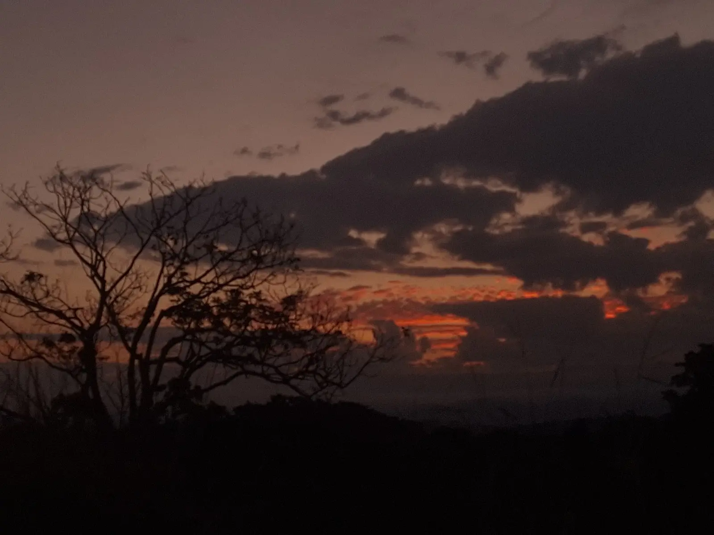
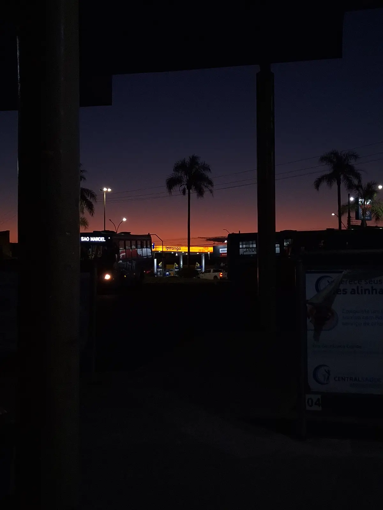

Dev Burguer
Experiência digital para hamburgueria com apresentação de produtos e identidade visual própria.
Hambúrgueria · repositórioPortfólio — 2026
Sou Angelo Braga Valeriano. Transformo ideias em experiências digitais que unem desenvolvimento web, tecnologia e linguagem audiovisual.
Entre lógica e expressão
Cada interface tem ritmo. Cada projeto tem uma história. Meu trabalho conecta clareza técnica, intenção visual e experiências que fazem sentido para pessoas reais.
Atuo com desenvolvimento web e produção audiovisual, explorando como essas duas linguagens podem fortalecer uma ideia — da arquitetura do código ao enquadramento final.
Busco soluções diretas, bem construídas e visualmente precisas, sem separar funcionalidade de identidade.
Projetos selecionados
Sites publicados e código aberto, conectados diretamente aos projetos disponíveis no meu GitHub.
Experiência digital para hamburgueria com apresentação de produtos e identidade visual própria.
Hambúrgueria · repositórioConteúdo organizado em páginas sobre fundamentos, princípios, vulnerabilidades e boas práticas digitais.
Apresentação de serviços e identidade visual para uma experiência digital voltada ao segmento de barbearia.
Arquivo visual
Uma seleção real do acervo conectado ao Google Drive, otimizada para navegação rápida.



Tem algo em mente?
Estou aberto a oportunidades profissionais, projetos freelance e colaborações.
Contato direto
Tem um projeto, ideia ou oportunidade? Entre em contato diretamente comigo.
Conversar no WhatsAppPor e-mail
Envie os detalhes da sua ideia, proposta ou oportunidade. Respondo assim que possível.
Enviar e-mail Angelobraga213@gmail.com